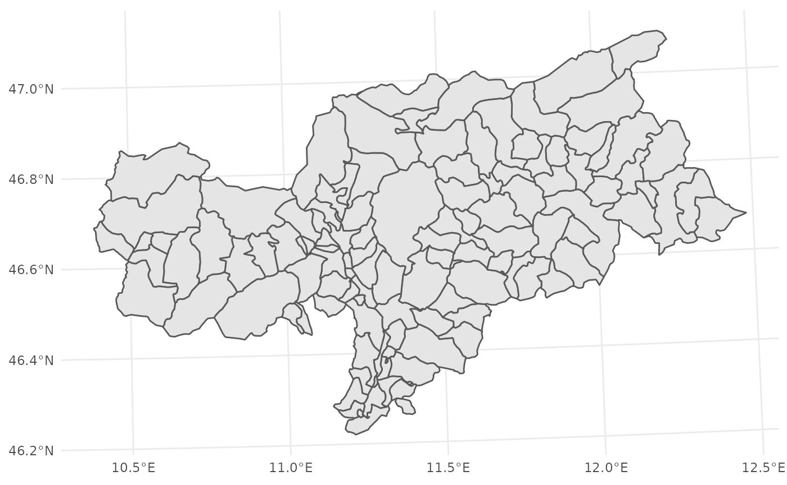
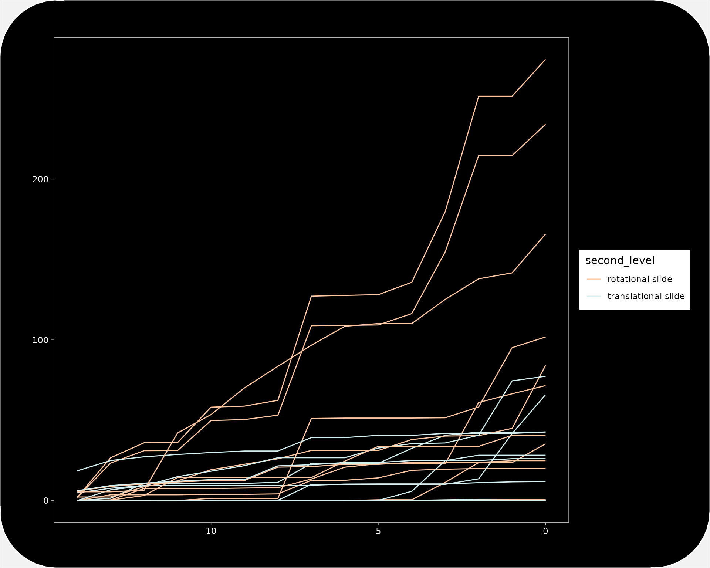

extract_rainfall_slope_unit.Rmd
library(tidyverse) # For much of the data preprocessing
library(grid)
library(rainfallR) # The access and processing of the rainfall data
library(here) # Project paths
library(gganimate) # For a little animation
library(iffitoR) # The landslide data
library(sf) # Handling of the spatial data
library(glue) # Concattening strings
library(purrr) # Mapping functions
library(crayon) # Coloured consolde output
library(raster) # Raster data handling
# which os to automatically set the paths
os = Sys.info()["sysname"]
if(os == "Linux"){
path_ncdf = "/mnt/CEPH_PROJECTS/Proslide/PREC_GRIDS_updated/"
su_path = "/mnt/CEPH_PROJECTS/Proslide/Envir_data/SlopeUnits/su_opt_16_TAA/su_16_TAA.shp"
}else if(os == "Windows"){
path_ncdf = "\\\\projectdata.eurac.edu/projects/Proslide/PREC_GRIDS_updated/"
su_path = "\\\\projectdata.eurac.edu/projects/Proslide/Envir_data/SlopeUnits/su_opt_16_TAA/su_16_TAA.shp"
}else{
stop(call. = F, "what the hell are you working on...")
}Lets understand a bit about the data that we got
The slope units not only cover South Tyrol, but also the trentino Region. So lets mask it
We can use the iffitoR::get_shape_southtyrol-function in order to get the outline of South Tyrol
# get vector of South Tyrol
st = iffitoR::get_shape_southtyrol()
ggplot(st) +
geom_sf() +
theme_minimal()
su_orig = st_read(su_path)
#> Reading layer `su_16_TAA' from data source `/mnt/CEPH_PROJECTS/Proslide/Envir_data/SlopeUnits/su_opt_16_TAA/su_16_TAA.shp' using driver `ESRI Shapefile'
#> Simple feature collection with 14543 features and 5 fields
#> geometry type: POLYGON
#> dimension: XY
#> bbox: xmin: 4350211 ymin: 2507176 xmax: 4510701 ymax: 2666725
#> projected CRS: Lambert_Azimuthal_Equal_Area
# and verify directly if they are in the same crs
st_crs(su_orig) == st_crs(st)
#> [1] FALSE
st_reproj = st_transform(st,st_crs(su_orig))
st_crs(st_reproj) == st_crs(su_orig)
#> [1] TRUE
su = st_crop(su_orig, st_reproj)
#> Warning: attribute variables are assumed to be spatially constant throughout all
#> geometries
# are the two bounding boxes equal?
st_bbox(su) == st_bbox(st_reproj) # for some reason the xmax is not the same
#> xmin ymin xmax ymax
#> TRUE TRUE FALSE TRUEFor each Slope Unit we will now get the dates with landslides in them
We can use the function slide_dates_in_polygon in order to extract all the points (landslides-initiation-points) that fall in each polygon (slope unit)
As we are using the landsld-object we are considering landslides of all types. Here is where we should apply some kind of filtering in order to select the slides that are of intereset to us.
Each polygon (could be catchements, slope units, …) will have a column in the output that is called poly_id. Each observation (each row) is uniquely identifiable by the date and the poly_id.
If there are more than one row for one poly_id this means that in the same polygon on several dates slides happened
We thus only extract the rainfall once for each polygon that saw a movement on a date
In order to not neglect the fact that potentially multiple slides could have happened, the column slides_per_poly_date present the number of slides that happened at that day in that polygon
landsld = landsld %>% filter(str_detect(second_level, "translational|rotational")) %>% slice(1:50)
su_points_in_poly = rainfallR::slide_dates_in_polygon(poly = su_path
,landsld = landsld)
#> [1] "using an sf-object as input to the iffi-argument"
#> Reading layer `su_16_TAA' from data source `/mnt/CEPH_PROJECTS/Proslide/Envir_data/SlopeUnits/su_opt_16_TAA/su_16_TAA.shp' using driver `ESRI Shapefile'
#> Simple feature collection with 14543 features and 5 fields
#> geometry type: POLYGON
#> dimension: XY
#> bbox: xmin: 4350211 ymin: 2507176 xmax: 4510701 ymax: 2666725
#> projected CRS: Lambert_Azimuthal_Equal_Area
#> Warning: attribute variables are assumed to be spatially constant throughout all
#> geometriesNow we have all the dates of all slides that happened within each polygon of su
One interesting question would be to ask what the day and slope unit was that saw most movements?
su_points_in_poly %>%
dplyr::select(c(poly_id, date, month.int, second_level, slides_per_poly_date)) %>%
arrange(desc(slides_per_poly_date)) %>%
head()
#> Simple feature collection with 6 features and 5 fields
#> geometry type: POLYGON
#> dimension: XY
#> bbox: xmin: 716861.3 ymin: 5204596 xmax: 735880.9 ymax: 5214580
#> projected CRS: WGS 84 / UTM zone 32N
#> # A tibble: 6 × 6
#> poly_id date month.int second_level slides_per_poly_date
#> <int> <date> <int> <chr> <int>
#> 1 36 1998-04-08 4 rotational slide 1
#> 2 63 1998-02-20 2 translational slide 1
#> 3 72 2018-05-07 5 rotational slide 1
#> 4 96 1993-04-30 4 translational slide 1
#> 5 154 1997-06-30 6 rotational slide 1
#> 6 199 1998-02-16 2 translational slide 1
#> # … with 1 more variable: geometry <POLYGON [m]>What about the rainfall Events that happened in slope units and did not cause landslides?
Then we look in the dates column and extract the rainfall for each of the date for that slope unit
We could do this in sequence, but lets do it in parallel as the extraction of the rainfall for each slope unit are independent tasks
slide_dates_in_polygon-functionThe function get_rainfall_for_polygons iterates over the dataframe returned by slides_dates_in_polygon
This is done in parallel as each row is one spatial object and is idependent of the others
In the end they are just stacked up to build one big dataframe
# filte out the slides before the start of the rainfall data
su_points_in_poly = su_points_in_poly[su_points_in_poly$date > as.Date("1980-01-01"), ]
# get the antecedent rainfall for all the dates in all the slope units with landslides
slopeunits_rainfall = rainfallR::get_rainfall_for_polygons(su_points_in_poly, nc_var = "precipitation", days_back = 14, data_path = path_ncdf)
#>
#> Attaching package: 'magrittr'
#> The following object is masked from 'package:raster':
#>
#> extract
#> The following object is masked from 'package:purrr':
#>
#> set_names
#> The following object is masked from 'package:tidyr':
#>
#> extractWithin the get_rainfall_for_polygons-function:
The function ex_rainfall which is called as many times as rows in the su_points_in_poly-object returns a dataframe
We used the .rbind-parameter for the .combine.argument, slopeunits_rainfall is one large dataframe
# verfiy that each slope unit has 6 entries for all the six days before the slide
slopeunits_rainfall %>%
group_by(poly_id, PIFF_ID) %>%
summarise(n = n()) %>%
ungroup() %>%
count(n)
#> `summarise()` has grouped output by 'poly_id'. You can override using the `.groups` argument.
#> Storing counts in `nn`, as `n` already present in input
#> ℹ Use `name = "new_name"` to pick a new name.
#> Simple feature collection with 1 feature and 2 fields
#> geometry type: MULTIPOLYGON
#> dimension: XY
#> bbox: xmin: 670084.8 ymin: 5123189 xmax: 735880.9 ymax: 5214580
#> CRS: +proj=utm +zone=32 +ellps=WGS84 +units=m +no_defs
#> # A tibble: 1 × 3
#> n nn geometry
#> * <int> <int> <MULTIPOLYGON [m]>
#> 1 15 24 (((671156.3 5123433, 671331.1 5123435, 671331.4 5123410, 671381.3…
table(slopeunits_rainfall$days_before_event)
#>
#> 0 1 2 3 4 5 6 7 8 9 10 11 12 13 14
#> 24 24 24 24 24 24 24 24 24 24 24 24 24 24 24